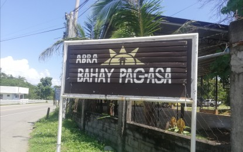

BANGUED, Abra – For nearly a decade, Abra's "Bahay Pag-asa" has been a
place of hope for young offenders in the Philippines. This center, established in November 2013 and operated
by 17 dedicated individuals, offers a second chance to children in conflict with the law (CICL). Accredited
by the Department of Social Welfare and Development in 2021, the center serves as a 24/7 intervention facility
while these youth await legal decisions. Rather than punishment, the focus here is on redirection and reform.
Residents, aged 16 to 26, receive psychosocial support, life skills training, and education through programs
like the Alternative Learning System. Thanks to this collaborative effort involving government agencies,
religious groups, private organizations, and more, many former residents have successfully reintegrated into
society, securing jobs and even completing degrees.
TAbra's "Bahay Pag-asa" is a beacon of hope for young offenders, offering them a fresh start and a chance to
mend their paths. The center, operational for almost a decade, provides a safe space for children in conflict
with the law (CICL) in the Philippines. Managed by the provincial government and accredited by the Department
of Social Welfare and Development, it operates round-the-clock, focusing on redirection and rehabilitation rather
than punishment. Through various programs, including psychosocial support, life skills training, and education,
residents are empowered to become responsible citizens. The center's success stories showcase the positive impact
it has had, with former residents finding employment, establishing families, and maintaining connections with their
second chance at "Bahay Pag-asa."

HOME OF SECOND CHANCES. The Bahay Pag-asa short-term residential care in Bangued, Abra stands as a testament that youth offenders have a chance of improving their lives with the reformation and redirection program that the management applies. Established in 2013, at least 159 juvenile offenders have lived in the facility, taken care of by the staff before they are released back into the community and to their families. (PNA photo by Liza Agoot)